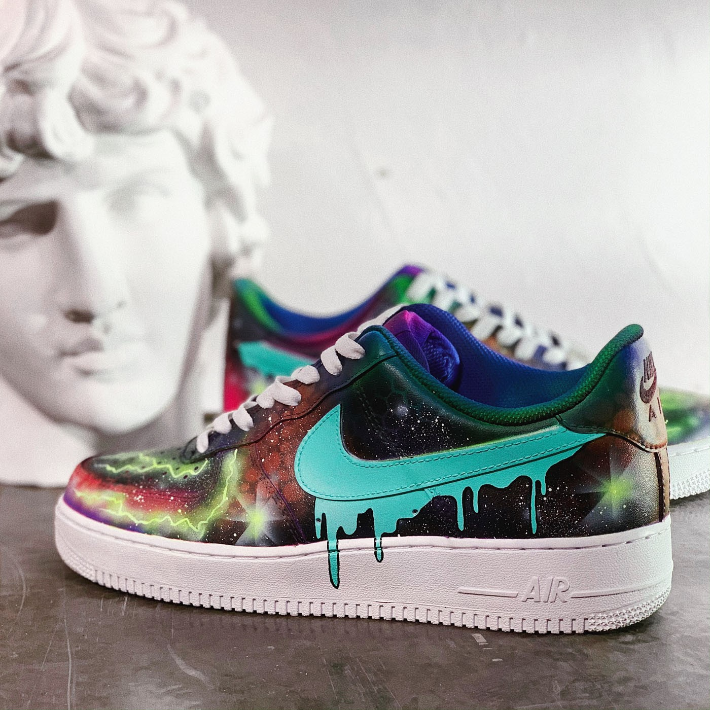

Самые популярные кроссовки для кастомов
Кастомизация (кроссовок в нашем случае) — это создание уникального рисунка по желанию заказчика или художника. Как правило, за основу берутся стандартные кроссовки из гладкой кожи с обширной поверхностью, на которую можно нанести рисунок. |
Примеры наших работ
|  |  |  |
Кроссовки
Nike Air Max 90
| Nike Air Force 1 | Air Jordan 1 Mid 
|